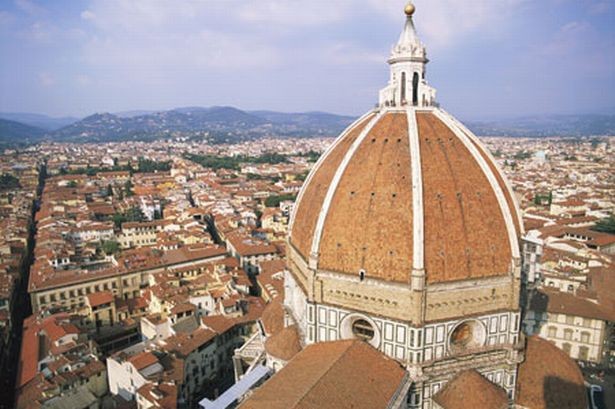

The Duomo

Basica Facts about the Duomo:
The many uses of the Duomo when visiting Italy:
- Navigation! The Duomo is so high, that it can be seen from great distances. Even if it is not visible, just knowing the general direction it is in helps immensely..
- Religion! The Duomo is a cathedral church and therefore is considered holy by most Florentines.
- Beauty! The architecture of the Duomo is very particular of the early Italian artists who constructed them, and therefore is so detailed and intricate; one can look at it for hours.
- Socializing! Since this is the center of Italy, people gather in the piazza with espresso, pizza, and gelato at any hour of the day.
- Shopping! If there exists an upscale store, Florence has it.
- View! It is possible to climb up an infinite number of steps, to be rewarded with the view of all of Florence from the top of the Duomo.